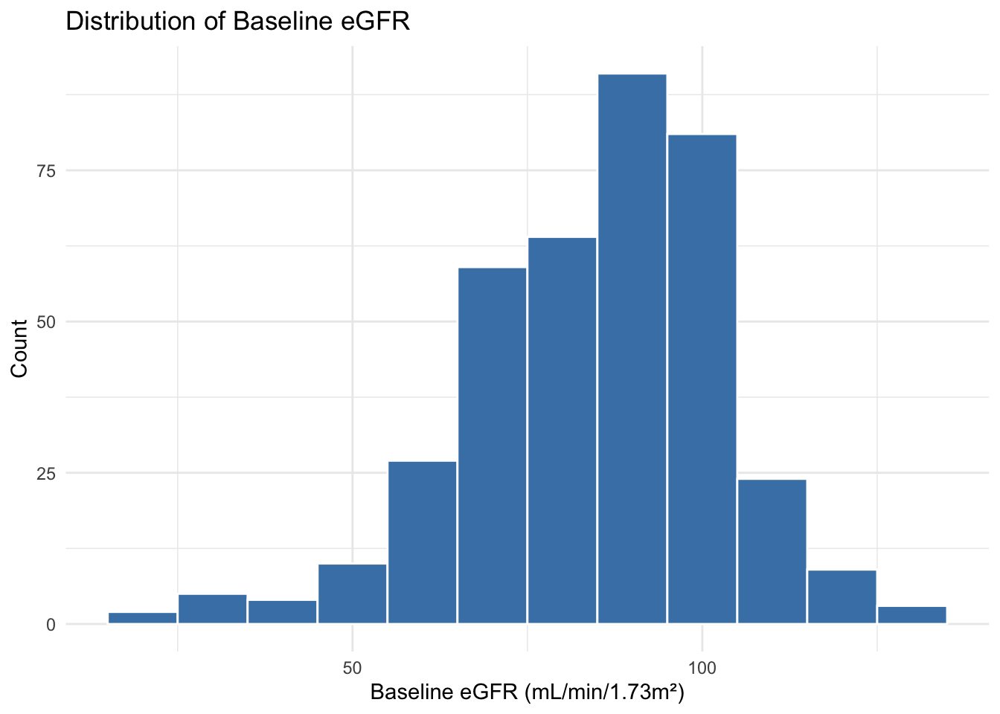
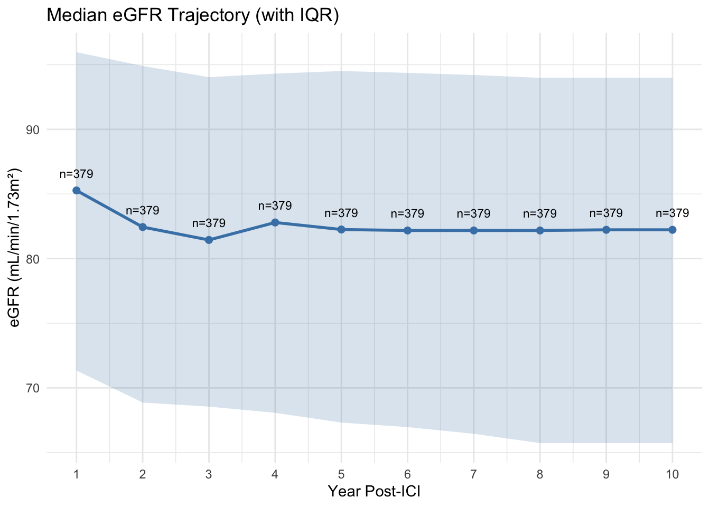
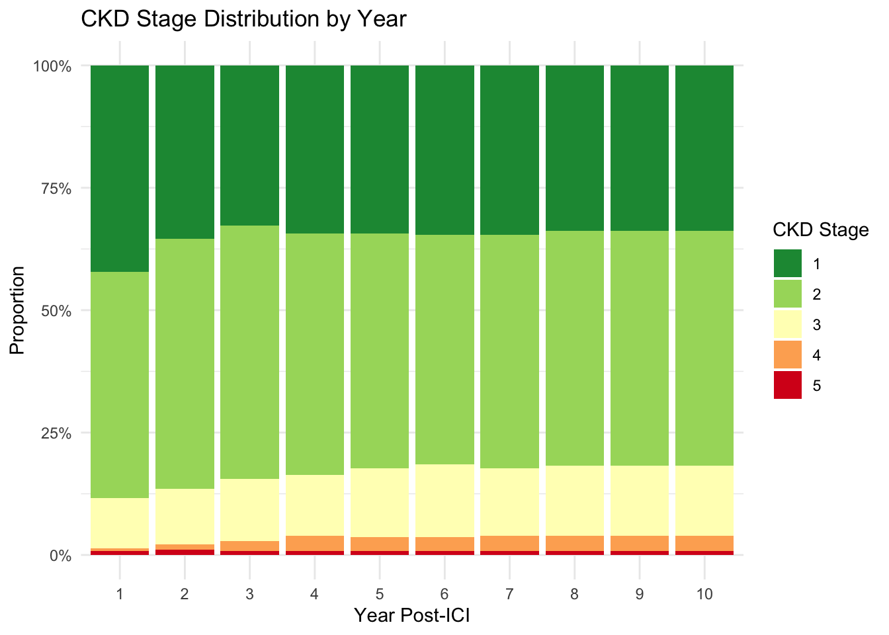
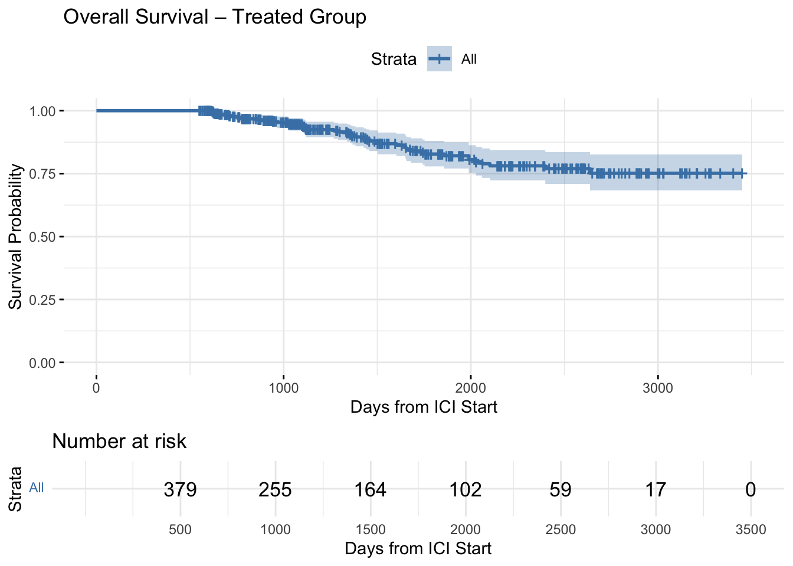
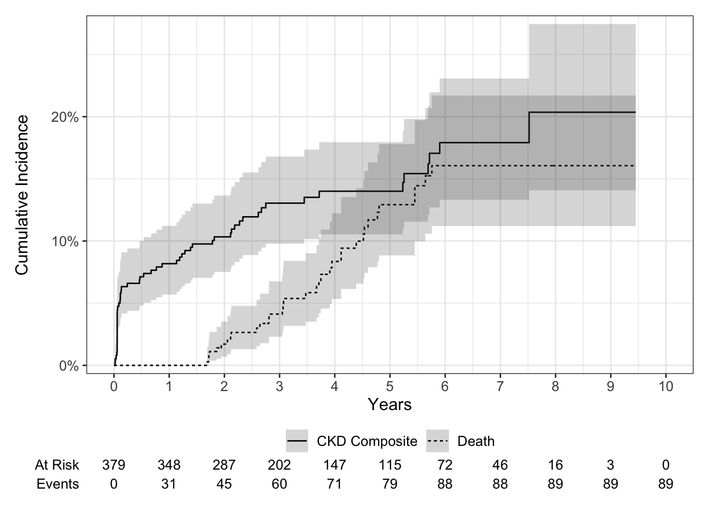
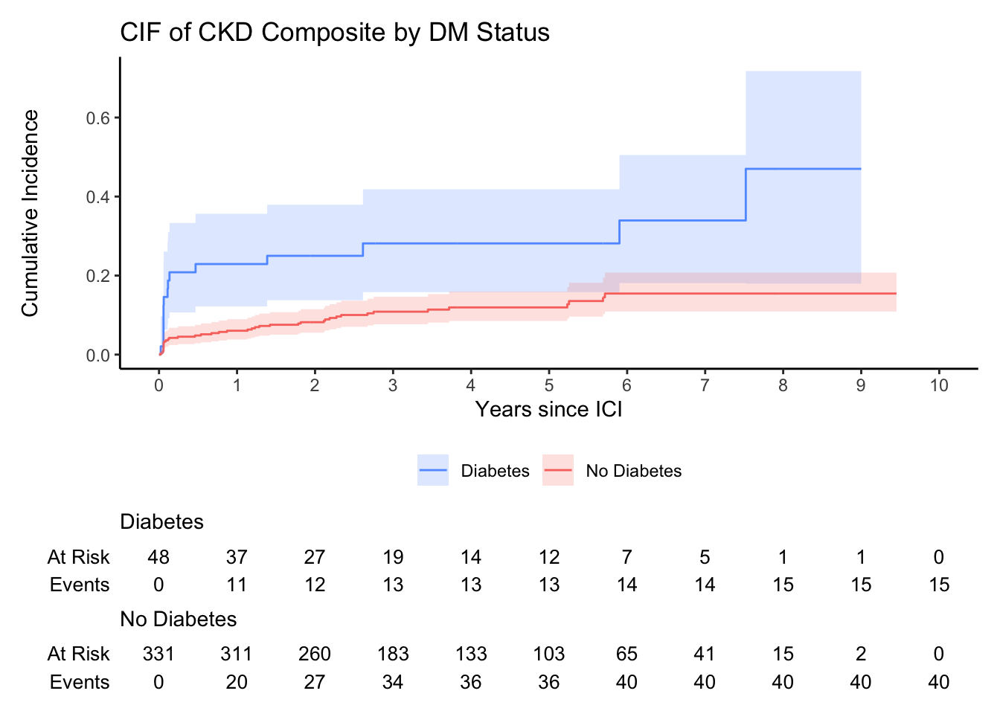

| Characteristic | N = 3791 |
|---|---|
| Age | 67 (56, 74) |
| Gender_Legal_Sex | |
| Female | 144 (38%) |
| Male | 235 (62%) |
| Race | |
| Asian | 3 (0.8%) |
| Black | 2 (0.5%) |
| Other/Unknown | 11 (2.9%) |
| White | 363 (96%) |
| Ethnic_Group | |
| Hispanic | 2 (0.5%) |
| Non_hispanic | 360 (95%) |
| Other | 17 (4.5%) |
| ICI_Name | |
| nivolumab | 83 (22%) |
| Nivolumab | 56 (15%) |
| pembrolizumab | 240 (63%) |
| ICI_Class | |
| PD1 | 379 (100%) |
| dm | 48 (13%) |
| htn | 210 (55%) |
| cad | 54 (14%) |
| cirrhosis | 1 (0.3%) |
| ace_arb | 123 (32%) |
| diu | 79 (21%) |
| ppi | 103 (27%) |
| steroids | 266 (70%) |
| smoking | 148 (39%) |
| statins | 158 (42%) |
| eGFR_CRE_baseline | 88 (73, 97) |
| ckd_stage_baseline | |
| 1 | 165 (44%) |
| 2 | 181 (48%) |
| 3 | 29 (7.7%) |
| 4 | 4 (1.1%) |
| aki | 5 (1.3%) |
| 1 Median (Q1, Q3); n (%) | |
Treated Group – Descriptive Analysis
Descriptive Analysis
Table 1 – Demographics & Cancer
Baseline Kidney Function
eGFR distribution

CKD stage distribution
| Characteristic | N = 3791 |
|---|---|
| CKD Stage (1-5) | |
| 1 | 165 (44%) |
| 2 | 181 (48%) |
| 3 | 29 (7.7%) |
| 4 | 4 (1.1%) |
| CKD Stage (3-level) | |
| stage 1 | 165 (44%) |
| stage 2 | 181 (48%) |
| stage 3 or more | 33 (8.7%) |
| 1 n (%) | |
Yearly eGFR Trajectory

Yearly CKD Stage Distribution

Overall Survival (Kaplan-Meier)

Death by Year
| Year | Cumulative Deaths | Total N | % Died |
|---|---|---|---|
| 1 | 0 | 379 | 0.0 |
| 2 | 62 | 379 | 16.4 |
| 3 | 150 | 379 | 39.6 |
| 4 | 214 | 379 | 56.5 |
| 5 | 252 | 379 | 66.5 |
| 6 | 294 | 379 | 77.6 |
| 7 | 326 | 379 | 86.0 |
| 8 | 358 | 379 | 94.5 |
| 9 | 375 | 379 | 98.9 |
| 10 | 379 | 379 | 100.0 |
Survival by Year
| Year | Survived to Year | Total N | % Survived |
|---|---|---|---|
| 1 | 379 | 379 | 100.0 |
| 2 | 317 | 379 | 83.6 |
| 3 | 226 | 379 | 59.6 |
| 4 | 161 | 379 | 42.5 |
| 5 | 126 | 379 | 33.2 |
| 6 | 84 | 379 | 22.2 |
| 7 | 52 | 379 | 13.7 |
| 8 | 21 | 379 | 5.5 |
| 9 | 4 | 379 | 1.1 |
| 10 | 0 | 379 | 0.0 |
CKD Outcomes Summary
| Year | CKD Incidence | CKD Progression | ESKD Composite | CKD Composite | N Followed |
|---|---|---|---|---|---|
| 1 | 5 | 26 | 2 | 31 | 379 |
| 2 | 11 | 28 | 3 | 39 | 317 |
| 3 | 19 | 28 | 3 | 47 | 226 |
| 4 | 21 | 28 | 3 | 49 | 161 |
| 5 | 21 | 28 | 3 | 49 | 126 |
| 6 | 26 | 28 | 3 | 54 | 84 |
| 7 | 26 | 28 | 3 | 54 | 52 |
| 8 | 27 | 28 | 3 | 55 | 21 |
| 9 | 27 | 28 | 3 | 55 | 4 |
| 10 | 27 | 28 | 3 | 55 | 0 |
Cumulative Incidence – CKD Composite vs Death

Univariate Fine-Gray Competing Risk Model
| Characteristic | N | HR1 | 95% CI1 | p-value |
|---|---|---|---|---|
| year_10 | 379 | 1.95 | 1.55, 2.46 | <0.001 |
| male | 379 | 1.31 | 0.75, 2.30 | 0.340 |
| Race | 379 | |||
| Asian | — | — | ||
| Black | 0.00 | 0.00, 0.00 | <0.001 | |
| Other/Unknown | 0.27 | 0.06, 1.23 | 0.091 | |
| White | 0.15 | 0.05, 0.44 | <0.001 | |
| dm | 379 | 2.99 | 1.67, 5.38 | <0.001 |
| htn | 379 | 2.25 | 1.25, 4.05 | 0.007 |
| cad | 379 | 1.37 | 0.69, 2.71 | 0.370 |
| cirrhosis | 379 | 0.00 | 0.00, 0.00 | <0.001 |
| ace_arb | 379 | 2.17 | 1.29, 3.66 | 0.004 |
| diu | 379 | 3.98 | 2.35, 6.74 | <0.001 |
| ppi | 379 | 2.20 | 1.29, 3.74 | 0.004 |
| steroids | 379 | 0.77 | 0.45, 1.34 | 0.360 |
| smoking | 379 | 1.45 | 0.85, 2.45 | 0.170 |
| statins | 379 | 1.83 | 1.09, 3.10 | 0.023 |
| eGFR_CRE_baseline_decrease_10 | 379 | 2.49 | 2.10, 2.96 | <0.001 |
| 1 HR = Hazard Ratio, CI = Confidence Interval | ||||
Multivariate Fine-Gray Model
| Characteristic | N | HR1 | 95% CI1 | p-value |
|---|---|---|---|---|
| year_10 | 379 | 1.08 | 0.80, 1.45 | 0.6 |
| male | 379 | 0.96 | 0.54, 1.71 | 0.9 |
| dm | 379 | 1.82 | 0.97, 3.40 | 0.061 |
| htn | 379 | 0.91 | 0.44, 1.87 | 0.8 |
| cad | 379 | 0.72 | 0.35, 1.49 | 0.4 |
| ppi | 379 | 1.92 | 1.09, 3.39 | 0.025 |
| smoking | 379 | 0.93 | 0.53, 1.61 | 0.8 |
| eGFR_CRE_baseline_decrease_10 | 379 | 2.49 | 2.03, 3.05 | <0.001 |
| cirrhosis | 379 | 0.00 | 0.00, 0.00 | <0.001 |
| statins | 379 | 0.63 | 0.32, 1.25 | 0.2 |
| 1 HR = Hazard Ratio, CI = Confidence Interval | ||||
Univariate Cause-Specific Hazard Model
| Characteristic | N | HR1 | 95% CI1 | p-value |
|---|---|---|---|---|
| year_10 | 379 | 2.05 | 1.58, 2.66 | <0.001 |
| male | 379 | 1.33 | 0.76, 2.34 | 0.3 |
| Race | 379 | |||
| Asian | — | — | ||
| Black | 0.00 | 0.00, Inf | >0.9 | |
| Other/Unknown | 0.25 | 0.04, 1.52 | 0.13 | |
| White | 0.14 | 0.03, 0.58 | 0.007 | |
| dm | 379 | 2.99 | 1.65, 5.42 | <0.001 |
| htn | 379 | 2.30 | 1.27, 4.16 | 0.006 |
| cad | 379 | 1.40 | 0.70, 2.77 | 0.3 |
| cirrhosis | 379 | 0.00 | 0.00, Inf | >0.9 |
| ace_arb | 379 | 2.25 | 1.32, 3.82 | 0.003 |
| diu | 379 | 4.16 | 2.44, 7.10 | <0.001 |
| ppi | 379 | 2.22 | 1.30, 3.79 | 0.003 |
| steroids | 379 | 0.77 | 0.44, 1.34 | 0.3 |
| smoking | 379 | 1.46 | 0.86, 2.48 | 0.2 |
| statins | 379 | 1.86 | 1.09, 3.16 | 0.022 |
| eGFR_CRE_baseline_decrease_10 | 379 | 2.68 | 2.24, 3.19 | <0.001 |
| 1 HR = Hazard Ratio, CI = Confidence Interval | ||||
CIF by Diabetes Status
